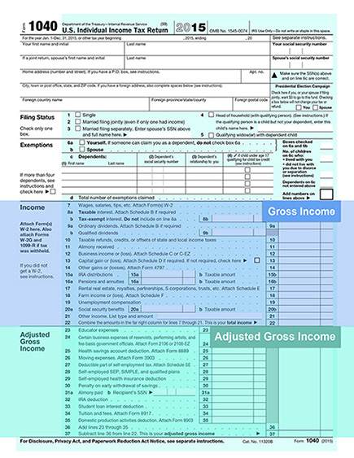
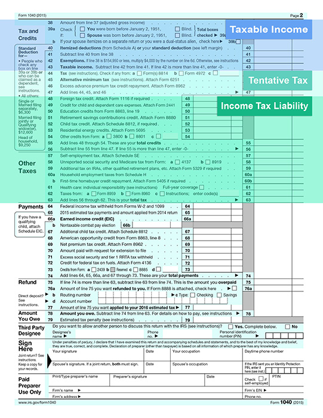

Before looking at Form 1040, let's first look at the basic tax formula that it represents. This basic tax formula serves as a general map of the entire form. It also serves as a roadmap for this course because we shall be discussing each segment of this formula throughout the remainder of this course.
Take a few minutes to become thoroughly familiar with this formula, as it is your key to understanding the entire process. Click each highlighted term to learn more.
Less adjustments for Adjusted Gross Income (AGI)
Less the greater of:
Multiplied by personal tax rate
Adjusted for Alternative Minimum Tax (AMT)
Less tax credits
Plus other taxes
Now that you have become familiar with the basic tax formula, let's look at Form 1040 itself. This copy has been marked to show you where each element of the basic tax formula is represented. Take a couple of minutes to read through each section. Scroll through the document to view each section.
